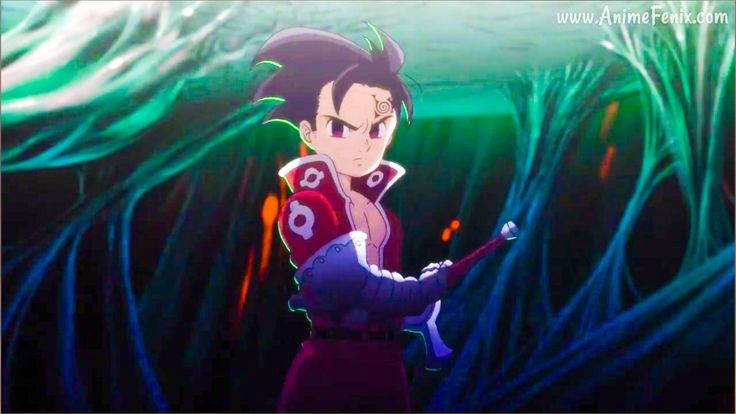
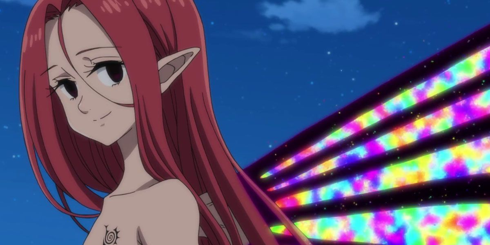

Inicio
Serie
Manga
Anime
Juego
Creador
Personajes
Pecados Capitales
Meliodas (Pecado de la ira)
Ban (Pecado de la avaricia)
King (Pecado de la pereza)
Diana (Pecado de la envidia)
Gowther (Pecado de la lujuria)
Merlin (Pecado de la gula)
Escanor (Pecado del orgullo)
Caballeros Sagrados
Leones de Bartra
Hendrickson
Dreyfus
Zaratras
Ghilthunder
Howzer
Los 10 Mandamientos y Clan demonio
Los 10 Mandamientos

Zeldris (Mandamiento de la piedad)
Estarossa (Mandamiento del amor)
Galand (Mandamiento de verdad)
Melascula (Mandamiento de la fe)
Drole (Mandamiento de la paciencia)

Gloxinia (Mandamiento del reposo)
Grayroad (Mandamiento del pacifismo)
Derieri (Mandamiento de la pureza)
Monspeet (Mandamiento de la reticencia)
Fraudin (mandamiento del desinteres)
Clan demonio
Chandler
Cusack
Demonio Original
Rey Demonio
Clan de las diosas
Elizabeth Liones
Ludociel (Gracia Luz)
Sariel (Gracia Tornado)
Tarmiel (Gracia Oceano)
Mael (Gracia Sunshine)
Deidad Suprema